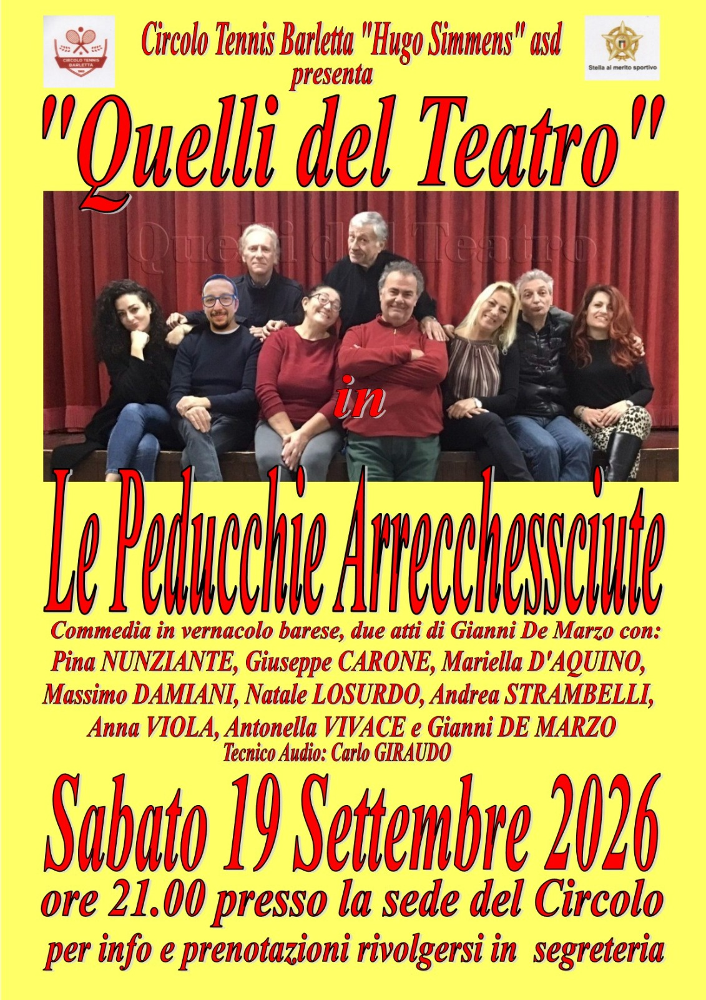

Dove andiamo in scena
Eventi
Prossime rappresentazioni e appuntamenti.
Dove siamo
Circolo Tennis Barletta "Hugo Simmens" asd

Le Peducchie Arrecchessciute
Abbiamo l'onore e il piacere di presentare una delle commedie più divertenti scritte da
Gianni De Marzo
felici di far conoscere il nostro modo di recitare e far divertire la gente, il tutto condito da tante risate!
Sabato 19 settembre 2026
Evento riservato ai soci e invitati del circolo.
Per informazioni rivolgersi alla segreteria, Viale Del Santuario 7 - Barletta Tel. 0883 533171